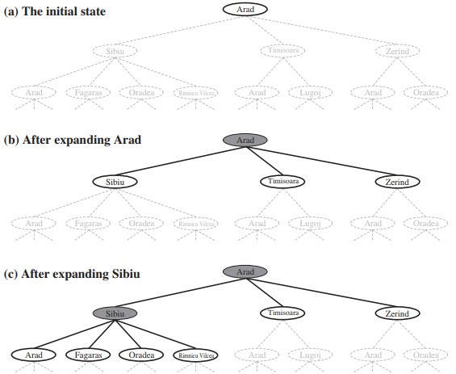

<!DOCTYPE html>
<html>
<head><meta name="generator" content="Hexo 3.8.0">
    <meta name="google-site-verification" content="Pq-mTDZK9AloZNLBSEURFJAoFEX6AeORZP_EjsTNxA8">
    <meta charset="utf-8">

    

    
    <title>Tree Search | Zequn&#39;s Blog</title>
    
    <meta name="viewport" content="width=device-width, initial-scale=1, maximum-scale=1">
    
        <meta name="keywords" content="AI">
    
    <meta name="description" content="A problem-solving agent is one kind of goal-based agent. We already know that the characteristics of the environment dictate techniques for solving the problem. And the fast search techniques are sui">
<meta name="keywords" content="AI">
<meta property="og:type" content="article">
<meta property="og:title" content="Tree Search">
<meta property="og:url" content="https://zequnsong.github.io/2019/04/28/Tree-Search/index.html">
<meta property="og:site_name" content="Zequn&#39;s Blog">
<meta property="og:description" content="A problem-solving agent is one kind of goal-based agent. We already know that the characteristics of the environment dictate techniques for solving the problem. And the fast search techniques are sui">
<meta property="og:locale" content="en">
<meta property="og:image" content="https://zequnsong.github.io/2019/04/28/Tree-Search/mapOfRomania.jpg">
<meta property="og:updated_time" content="2019-04-28T06:38:03.343Z">
<meta name="twitter:card" content="summary">
<meta name="twitter:title" content="Tree Search">
<meta name="twitter:description" content="A problem-solving agent is one kind of goal-based agent. We already know that the characteristics of the environment dictate techniques for solving the problem. And the fast search techniques are sui">
<meta name="twitter:image" content="https://zequnsong.github.io/2019/04/28/Tree-Search/mapOfRomania.jpg">
    

    
        <link rel="alternate" href="/atom.xml" title="Zequn&#39;s Blog" type="application/atom+xml">
    

    
        <link rel="icon" href="/css/images/favicon.ico">
    

    <link rel="stylesheet" href="/libs/font-awesome/css/font-awesome.min.css">
    <link rel="stylesheet" href="/libs/titillium-web/styles.css">
    <link rel="stylesheet" href="/libs/source-code-pro/styles.css">

    <link rel="stylesheet" href="/css/style.css">

    <script src="/libs/jquery/3.3.1/jquery.min.js"></script>
    
    
        <link rel="stylesheet" href="/libs/lightgallery/css/lightgallery.min.css">
    
    
        <link rel="stylesheet" href="/libs/justified-gallery/justifiedGallery.min.css">
    
    
    


</head>
</html>
<body>
    <div id="wrap">
        <header id="header">
    <div id="header-outer" class="outer">
        <div class="container">
            <div class="container-inner">
                <div id="header-title">
                    <h1 class="logo-wrap">
                        <a href="/" class="logo"></a>
                    </h1>
                    
                        <h2 class="subtitle-wrap">
                            <p class="subtitle">Stay hungry Stay Foolish</p>
                        </h2>
                    
                </div>
                <div id="header-inner" class="nav-container">
                    <a id="main-nav-toggle" class="nav-icon fa fa-bars"></a>
                    <div class="nav-container-inner">
                        <ul id="main-nav">
                            
                                <li class="main-nav-list-item">
                                    <a class="main-nav-list-link" href="/">Home</a>
                                </li>
                            
                                        <ul class="main-nav-list"><li class="main-nav-list-item"><a class="main-nav-list-link" href="/categories/Artificial-Intelligence/">Artificial Intelligence</a><ul class="main-nav-list-child"><li class="main-nav-list-item"><a class="main-nav-list-link" href="/categories/Artificial-Intelligence/Introduction-to-AI/">Introduction to AI</a></li><li class="main-nav-list-item"><a class="main-nav-list-link" href="/categories/Artificial-Intelligence/Uninformed-Informed-Search/">Uninformed & Informed Search</a></li></ul></li><li class="main-nav-list-item"><a class="main-nav-list-link" href="/categories/Hexo/">Hexo</a><ul class="main-nav-list-child"><li class="main-nav-list-item"><a class="main-nav-list-link" href="/categories/Hexo/Tag-Plugins/">Tag Plugins</a></li></ul></li></ul>
                                    
                                <li class="main-nav-list-item">
                                    <a class="main-nav-list-link" href="/about/index.html">About</a>
                                </li>
                            
                        </ul>
                        <nav id="sub-nav">
                            <div id="search-form-wrap">

    <form class="search-form">
        <input type="text" class="ins-search-input search-form-input" placeholder="Search">
        <button type="submit" class="search-form-submit"></button>
    </form>
    <div class="ins-search">
    <div class="ins-search-mask"></div>
    <div class="ins-search-container">
        <div class="ins-input-wrapper">
            <input type="text" class="ins-search-input" placeholder="Type something...">
            <span class="ins-close ins-selectable"><i class="fa fa-times-circle"></i></span>
        </div>
        <div class="ins-section-wrapper">
            <div class="ins-section-container"></div>
        </div>
    </div>
</div>
<script>
(function (window) {
    var INSIGHT_CONFIG = {
        TRANSLATION: {
            POSTS: 'Posts',
            PAGES: 'Pages',
            CATEGORIES: 'Categories',
            TAGS: 'Tags',
            UNTITLED: '(Untitled)',
        },
        ROOT_URL: '/',
        CONTENT_URL: '/content.json',
    };
    window.INSIGHT_CONFIG = INSIGHT_CONFIG;
})(window);
</script>
<script src="/js/insight.js"></script>

</div>
                        </nav>
                    </div>
                </div>
            </div>
        </div>
    </div>
</header>
        <div class="container">
            <div class="main-body container-inner">
                <div class="main-body-inner">
                    <section id="main">
                        <div class="main-body-header">
    <h1 class="header">
    
    <a class="page-title-link" href="/categories/Artificial-Intelligence/">Artificial Intelligence</a><i class="icon fa fa-angle-right"></i><a class="page-title-link" href="/categories/Artificial-Intelligence/Uninformed-Informed-Search/">Uninformed & Informed Search</a>
    </h1>
</div>

                        <div class="main-body-content">
                            <article id="post-Tree-Search" class="article article-single article-type-post" itemscope itemprop="blogPost">
    <div class="article-inner">
        
            <header class="article-header">
                
    
        <h1 class="article-title" itemprop="name">
        Tree Search
        </h1>
    

            </header>
        
        
            <div class="article-meta">
                
    <div class="article-date">
        <a href="/2019/04/28/Tree-Search/" class="article-date">
            <time datetime="2019-04-28T06:37:58.000Z" itemprop="datePublished">2019-04-28</time>
        </a>
    </div>

		

                
    <div class="article-tag">
        <i class="fa fa-tag"></i>
        <a class="tag-link" href="/tags/AI/">AI</a>
    </div>

                Views:<span id="/2019/04/28/Tree-Search/" class="leancloud_visitors" data-flag-title="Tree Search"></span>
            </div>
        
        
        <div class="article-entry" itemprop="articleBody">
            <hr>
<p>A problem-solving agent is one kind of goal-based agent. We already know that the characteristics of the environment dictate techniques for solving the problem. And the fast search techniques are suitable for known, observable, and deterministic environments.</p>
<h4 id="Environment"><a href="#Environment" class="headerlink" title="Environment"></a>Environment</h4><p><strong>Known:</strong> the agent knows which states are reached by each action<br><strong>Observable:</strong> the agent always knows the current state<br><strong>Deterministic:</strong> each action has exactly one outcome</p>
<p>Before trying to solve the problem, we need to formulate the problem. </p>
<h4 id="Problem-Formulation"><a href="#Problem-Formulation" class="headerlink" title="Problem Formulation"></a>Problem Formulation</h4><ul>
<li><strong>Initial state</strong></li>
<li><strong>Actions &amp; Cost</strong></li>
<li><strong>Transition function:</strong> Result(state, action) = next state</li>
<li><strong>State space:</strong> include every possible state</li>
<li><strong>Goal test:</strong> which determines whether a given state is a goal state</li>
</ul>

<center><font color="#afaaaa" size="4">Map of Rimania</font></center>

<h6 id="Example"><a href="#Example" class="headerlink" title="Example"></a>Example</h6><p>Imagine an agent in the city of Arad, Romania. It wants to reach Bucharest.</p>
<ul>
<li>The environment is<br>– known: the agent has a map of Romania;<br>– observable: each city has a sign indicating its presence to arriving drivers;<br>– deterministic: if agent chooses to drive from Arad to Sibiu, it does end up in Sibiu.</li>
</ul>
<ul>
<li>The problem formulation is<br>– Initial state: Arad;<br>– Actions &amp; Cost: action == drive from city A to city B; cost == distance;<br>– Transition function: Result(current city, action) = next city – known from the map;<br>– State space: Cities on the map;<br>– Goal test: Is state == Bucharest?</li>
</ul>
<h4 id="Search-Tree"><a href="#Search-Tree" class="headerlink" title="Search Tree"></a>Search Tree</h4><p>After formulated the problem, we now need to solve it. </p>
<p>A solution to the problem above is a sequence of actions which transforms the initial state to a goal state. Search algorithms work by considering various possible action sequences through the search tree.</p>
<ul>
<li>Component of a search tree<br>– root : initial state<br>– nodes: states in state space<br>– branches : actions<br>– frontier (open list): a queue which contains all leaf nodes available for expansion<br>– closed list: a set which remembers every expanded node.</li>
</ul>
<p>A Closed list is only needed when redundant paths are unavoidable, e.g. Arad -&gt; Sibiu -&gt; Arad …<br>We need a closed list to avoid exploring redundant paths.<br>The closed list should be implemented with a <strong>hash table</strong> to allow efficient checking for<br>repeated states.</p>
<figure class="highlight matlab"><table><tr><td class="gutter"><pre><span class="line">1</span><br><span class="line">2</span><br><span class="line">3</span><br><span class="line">4</span><br><span class="line">5</span><br><span class="line">6</span><br><span class="line">7</span><br><span class="line">8</span><br><span class="line">9</span><br><span class="line">10</span><br><span class="line">11</span><br><span class="line">12</span><br><span class="line">13</span><br><span class="line">14</span><br><span class="line">15</span><br><span class="line">16</span><br><span class="line">17</span><br><span class="line">18</span><br></pre></td><td class="code"><pre><span class="line">//------------informal description of the general tree-search---------------</span><br><span class="line"><span class="function"><span class="keyword">function</span> <span class="title">TREE</span>-<span class="title">SEARCH</span><span class="params">(problem)</span> <span class="title">returns</span> <span class="title">a</span> <span class="title">solution</span>, <span class="title">or</span> <span class="title">failure</span></span></span><br><span class="line">  initialize the frontier using the initial state of problem</span><br><span class="line">  initialize the explored set to be empty</span><br><span class="line">  loop do</span><br><span class="line">    <span class="keyword">if</span> the frontier is empty then <span class="keyword">return</span> failure</span><br><span class="line">    choose a leaf node and remove it from the frontier</span><br><span class="line">    <span class="keyword">if</span> the node contains a goal state then <span class="keyword">return</span> the corresponding solution</span><br><span class="line">    add the node to the explored set</span><br><span class="line">    expand the chosen node, adding the resulting nodes to the frontier </span><br><span class="line">      only <span class="keyword">if</span> not in the frontier or explored set</span><br><span class="line">    </span><br><span class="line">//---------------------- node of the search tree-------------------------</span><br><span class="line"><span class="function"><span class="keyword">function</span> <span class="title">CHILD</span>-<span class="title">NODE</span><span class="params">(problem, parent, action)</span> <span class="title">returns</span> <span class="title">a</span> <span class="title">node</span></span></span><br><span class="line">  <span class="keyword">return</span> a node with</span><br><span class="line">    STATE = problem.RESULT(parent.STATE, action),</span><br><span class="line">    PARENT = parent, ACTION = action,</span><br><span class="line">    PATH-COST = parent.PATH-COST + problem.STEP-COST(parent.STATE, action)</span><br></pre></td></tr></table></figure>
<p>The node has PARENT pointer, solution is the sequence of actions obtained by following parent pointers back to the root.</p>
<p></p>
<h6 id="Example-1"><a href="#Example-1" class="headerlink" title="Example"></a>Example</h6><p>Figure above shows the partial search trees for finding a route from Arad to Bucharest</p>
<ul>
<li>Component of the search tree<br>– root : Arad<br>– nodes (shaded): nodes that have been expanded;<br>– nodes (outlined in bold): nodes that have been generated but not yet expanded;<br>– nodes (dashed lines): nodes that have not yet been generated;<br>– branches : parent node -&gt; child node;<br>– frontier (open list): nodes outlined in bold;<br>– explored set (closed list): a set which remembers every expanded node.</li>
</ul>
<ul>
<li>Tree-Search<br>initial frontier = { Arad };<br><strong>step1: </strong>remove Arad from frontier;<br><strong>step2: </strong>current city == goal city ? return solution : do step3.;<br><strong>step3: </strong>expand current city to adjacent cities: Sibiu, Timisoara, Zerind. Add them to frontier;<br><strong>step4: </strong>if frontier is not empty, choose a city to expand according to some strategy, and do step234 recurrently;<br><strong>step5: </strong>if frontier is not empty, return false.</li>
</ul>
<p>In fact, all search algorithms share this basic tree structure above, they vary primarily according to how they choose which state to expand next – the so-called <strong>search strategy</strong>.</p>
<p>We have two different search strategy, <strong>Uninformed Search</strong> and <strong>Informed Search</strong>, which will be covered in next two articles.</p>
<h4 id="Evaluation-Criteria-for-Algorithms"><a href="#Evaluation-Criteria-for-Algorithms" class="headerlink" title="Evaluation Criteria for Algorithms"></a>Evaluation Criteria for Algorithms</h4><p>Before we get into the design of specific search strategies, we need to consider the criteria that might be used to choose among them. We can evaluate an algorithm’s performance in<br>four ways:</p>
<ul>
<li><strong>Completeness:</strong> Is the algorithm guaranteed to find a solution when there is one?</li>
<li><strong>Optimality:</strong> Does the strategy find the optimal solution?</li>
<li><strong>Time complexity:</strong> How long does it take to find a solution?</li>
<li><strong>Space complexity:</strong> How much memory is needed to perform the search?</li>
</ul>
<p>In AI, complexity is expressed in terms of three quantities: </p>
<ul>
<li><strong>b:</strong> the branching factor or maximum number of successors of any node; </li>
<li><strong>d:</strong> the depth of the shallowest goal node (i.e., the number of steps along the path from the root);</li>
<li><strong>m:</strong> the maximum length of any path in the state space. </li>
</ul>
<p>Time is often measured in terms of the number of nodes generated during the search.<br>Space in terms of the maximum number of nodes stored in memory.</p>
<h6 id="Source-of-pictures-for-this-article"><a href="#Source-of-pictures-for-this-article" class="headerlink" title="Source of pictures for this article:"></a>Source of pictures for this article:</h6><p>Russell and Norvig (2010). Artificial Intelligence: A Modern Approach.</p>

        </div>
        <footer class="article-footer">
            


    <a data-url="https://zequnsong.github.io/2019/04/28/Tree-Search/" data-id="cjv0kbkuk0005ksdzjj69lt3u" class="article-share-link"><i class="fa fa-share"></i>Share</a>
<script>
    (function ($) {
        $('body').on('click', function() {
            $('.article-share-box.on').removeClass('on');
        }).on('click', '.article-share-link', function(e) {
            e.stopPropagation();

            var $this = $(this),
                url = $this.attr('data-url'),
                encodedUrl = encodeURIComponent(url),
                id = 'article-share-box-' + $this.attr('data-id'),
                offset = $this.offset(),
                box;

            if ($('#' + id).length) {
                box = $('#' + id);

                if (box.hasClass('on')){
                    box.removeClass('on');
                    return;
                }
            } else {
                var html = [
                    '<div id="' + id + '" class="article-share-box">',
                        '<input class="article-share-input" value="' + url + '">',
                        '<div class="article-share-links">',
                            '<a href="https://twitter.com/intent/tweet?url=' + encodedUrl + '" class="article-share-twitter" target="_blank" title="Twitter"></a>',
                            '<a href="https://www.facebook.com/sharer.php?u=' + encodedUrl + '" class="article-share-facebook" target="_blank" title="Facebook"></a>',
                            '<a href="http://pinterest.com/pin/create/button/?url=' + encodedUrl + '" class="article-share-pinterest" target="_blank" title="Pinterest"></a>',
                            '<a href="https://plus.google.com/share?url=' + encodedUrl + '" class="article-share-google" target="_blank" title="Google+"></a>',
                        '</div>',
                    '</div>'
                ].join('');

              box = $(html);

              $('body').append(box);
            }

            $('.article-share-box.on').hide();

            box.css({
                top: offset.top + 25,
                left: offset.left
            }).addClass('on');

        }).on('click', '.article-share-box', function (e) {
            e.stopPropagation();
        }).on('click', '.article-share-box-input', function () {
            $(this).select();
        }).on('click', '.article-share-box-link', function (e) {
            e.preventDefault();
            e.stopPropagation();

            window.open(this.href, 'article-share-box-window-' + Date.now(), 'width=500,height=450');
        });
    })(jQuery);
</script>

        </footer>
    </div>
    <script type="application/ld+json">
    {
        "@context": "https://schema.org",
        "@type": "BlogPosting",
        "author": {
            "@type": "Person",
            "name": "Zequn Song"
        },
        "headline": "Tree Search",
        "image": "https://zequnsong.github.io/2019/04/28/Tree-Search/mapOfRomania.jpg",
        "keywords": "AI",
        "genre": "Artificial Intelligence Uninformed & Informed Search",
        "datePublished": "2019-04-28",
        "dateCreated": "2019-04-28",
        "dateModified": "2019-04-28",
        "url": "https://zequnsong.github.io/2019/04/28/Tree-Search/",
        "description": "
A problem-solving agent is one kind of goal-based agent. We already know that the characteristics of the environment dictate techniques for solving the problem. And the fast search techniques are sui"
        "wordCount": 955
    }
</script>

</article>

    <section id="comments">
    
        
    <div id="lv-container" data-id="city" data-uid="MTAyMC80Mzk1NC8yMDQ5MA=="></div>

    
    </section>


                        </div>
                    </section>
                    <aside id="sidebar">
    <a class="sidebar-toggle" title="Expand Sidebar"><i class="toggle icon"></i></a>
    <div class="sidebar-top">
        <p>follow:</p>
        <ul class="social-links">
            
                
                <li>
                    <a class="social-tooltip" title="github" href="https://github.com/ZequnSong" target="_blank" rel="noopener">
                        <i class="icon fa fa-github"></i>
                    </a>
                </li>
                
            
                
                <li>
                    <a class="social-tooltip" title="linkedin" href="https://www.linkedin.com/in/zequnsong/" target="_blank" rel="noopener">
                        <i class="icon fa fa-linkedin"></i>
                    </a>
                </li>
                
            
                
                <li>
                    <a class="social-tooltip" title="twitter" href="https://twitter.com/Zequn_S" target="_blank" rel="noopener">
                        <i class="icon fa fa-twitter"></i>
                    </a>
                </li>
                
            
                
                <li>
                    <a class="social-tooltip" title="facebook" href="https://www.facebook.com/zequn.song.754" target="_blank" rel="noopener">
                        <i class="icon fa fa-facebook"></i>
                    </a>
                </li>
                
            
                
                <li>
                    <a class="social-tooltip" title="rss" href="/atom.xml" target="_blank" rel="noopener">
                        <i class="icon fa fa-rss"></i>
                    </a>
                </li>
                
            
        </ul>
    </div>
    
        
<nav id="article-nav">
    
    
        <a href="/2019/04/28/Introduction-to-AI/" id="article-nav-older" class="article-nav-link-wrap">
        <strong class="article-nav-caption">older</strong>
        <p class="article-nav-title">Introduction to AI</p>
        <i class="icon fa fa-chevron-left" id="icon-chevron-left"></i>
        </a>
    
</nav>

    
    <div class="widgets-container">
        
            
                

            
                
    <div class="widget-wrap">
        <h3 class="widget-title">recents</h3>
        <div class="widget">
            <ul id="recent-post" class>
                
                    <li>
                        
                        <div class="item-thumbnail">
                            <a href="/2019/04/28/Tree-Search/" class="thumbnail">
    
    
        <span style="background-image:url(/2019/04/28/Tree-Search/mapOfRomania.jpg)" alt="Tree Search" class="thumbnail-image"></span>
    
    
</a>

                        </div>
                        
                        <div class="item-inner">
                            <p class="item-category"><a class="article-category-link" href="/categories/Artificial-Intelligence/">Artificial Intelligence</a><i class="icon fa fa-angle-right"></i><a class="article-category-link" href="/categories/Artificial-Intelligence/Uninformed-Informed-Search/">Uninformed & Informed Search</a></p>
                            <p class="item-title"><a href="/2019/04/28/Tree-Search/" class="title">Tree Search</a></p>
                            <p class="item-date"><time datetime="2019-04-28T06:37:58.000Z" itemprop="datePublished">2019-04-28</time></p>
                        </div>
                    </li>
                
                    <li>
                        
                        <div class="item-thumbnail">
                            <a href="/2019/04/28/Introduction-to-AI/" class="thumbnail">
    
    
        <span style="background-image:url(/2019/04/28/Introduction-to-AI/cover.png)" alt="Introduction to AI" class="thumbnail-image"></span>
    
    
</a>

                        </div>
                        
                        <div class="item-inner">
                            <p class="item-category"><a class="article-category-link" href="/categories/Artificial-Intelligence/">Artificial Intelligence</a><i class="icon fa fa-angle-right"></i><a class="article-category-link" href="/categories/Artificial-Intelligence/Introduction-to-AI/">Introduction to AI</a></p>
                            <p class="item-title"><a href="/2019/04/28/Introduction-to-AI/" class="title">Introduction to AI</a></p>
                            <p class="item-date"><time datetime="2019-04-28T06:09:22.000Z" itemprop="datePublished">2019-04-28</time></p>
                        </div>
                    </li>
                
                    <li>
                        
                        <div class="item-thumbnail">
                            <a href="/2019/04/28/TagPlugins-Test/" class="thumbnail">
    
    
        <span style="background-image:url(/2019/04/28/TagPlugins-Test/dfeb310fcf5b3751849d6c6278e05299.jpg)" alt="TagPlugins Test" class="thumbnail-image"></span>
    
    
</a>

                        </div>
                        
                        <div class="item-inner">
                            <p class="item-category"><a class="article-category-link" href="/categories/Hexo/">Hexo</a><i class="icon fa fa-angle-right"></i><a class="article-category-link" href="/categories/Hexo/Tag-Plugins/">Tag Plugins</a></p>
                            <p class="item-title"><a href="/2019/04/28/TagPlugins-Test/" class="title">TagPlugins Test</a></p>
                            <p class="item-date"><time datetime="2019-04-28T06:08:58.000Z" itemprop="datePublished">2019-04-28</time></p>
                        </div>
                    </li>
                
            </ul>
        </div>
    </div>

            
                
    <div class="widget-wrap widget-list">
        <h3 class="widget-title">categories</h3>
        <div class="widget">
            <ul class="category-list"><li class="category-list-item"><a class="category-list-link" href="/categories/Artificial-Intelligence/">Artificial Intelligence</a><span class="category-list-count">2</span><ul class="category-list-child"><li class="category-list-item"><a class="category-list-link" href="/categories/Artificial-Intelligence/Introduction-to-AI/">Introduction to AI</a><span class="category-list-count">1</span></li><li class="category-list-item"><a class="category-list-link" href="/categories/Artificial-Intelligence/Uninformed-Informed-Search/">Uninformed & Informed Search</a><span class="category-list-count">1</span></li></ul></li><li class="category-list-item"><a class="category-list-link" href="/categories/Hexo/">Hexo</a><span class="category-list-count">1</span><ul class="category-list-child"><li class="category-list-item"><a class="category-list-link" href="/categories/Hexo/Tag-Plugins/">Tag Plugins</a><span class="category-list-count">1</span></li></ul></li></ul>
        </div>
    </div>


            
                
    <div class="widget-wrap widget-list">
        <h3 class="widget-title">archives</h3>
        <div class="widget">
            <ul class="archive-list"><li class="archive-list-item"><a class="archive-list-link" href="/archives/2019/04/">April 2019</a><span class="archive-list-count">3</span></li></ul>
        </div>
    </div>


            
                
    <div class="widget-wrap widget-list">
        <h3 class="widget-title">tags</h3>
        <div class="widget">
            <ul class="tag-list"><li class="tag-list-item"><a class="tag-list-link" href="/tags/AI/">AI</a><span class="tag-list-count">2</span></li></ul>
        </div>
    </div>


            
                
    <div class="widget-wrap widget-float">
        <h3 class="widget-title">tag cloud</h3>
        <div class="widget tagcloud">
            <a href="/tags/AI/" style="font-size: 10px;">AI</a>
        </div>
    </div>


            
                
    <div class="widget-wrap widget-list">
        <h3 class="widget-title">links</h3>
        <div class="widget">
            <ul>
                
                    <li>
                        <a href="http://wonderingkaho.github.io">Kaho Lee</a>
                    </li>
                
            </ul>
        </div>
    </div>


            
        
    </div>
</aside>

                </div>
            </div>
        </div>
        <footer id="footer">
    <div class="container">
        <div class="container-inner">
            <a id="back-to-top" href="javascript:;"><i class="icon fa fa-angle-up"></i></a>
            <div class="credit">
                <h1 class="logo-wrap">
                    <a href="/" class="logo"></a>
                </h1>
                <p>&copy; 2019 Zequn Song</p>
                <p>Powered by <a href="//hexo.io/" target="_blank">Hexo</a>. Theme by <a href="//github.com/ppoffice" target="_blank">PPOffice</a></p>
                <span id="busuanzi_container_site_pv">Total View: <span id="busuanzi_value_site_pv"></span> &nbsp; </span>
                <span id="busuanzi_container_site_uv">Unique Visitor: <span id="busuanzi_value_site_uv"></span></span>
            </div>
            <div class="footer-plugins">
              
    


            </div>
        </div>
    </div>
</footer>
<!--��װ�����ӽű�-->
<script async src="//busuanzi.ibruce.info/busuanzi/2.3/busuanzi.pure.mini.js"></script>
<!--��װleanCloud-->
<script src="//cdn1.lncld.net/static/js/2.5.0/av-min.js"></script>
<script>
    var APP_ID = 'TmPlBi7KsQ7v8vIBX3LKD2sM-gzGzoHsz';
    var APP_KEY = 'EUauPtwUDhpzhOVi4HX8tNjD';
    AV.init({
        appId: APP_ID,
        appKey: APP_KEY
    });
    // ��ʾ����
    function showTime(Counter) {
        var query = new AV.Query("Counter");
        if($(".leancloud_visitors").length > 0){
            var url = $(".leancloud_visitors").attr('id').trim();
            // where field
            query.equalTo("words", url);
            // count
            query.count().then(function (number) {
                // There are number instances of MyClass where words equals url.
                $(document.getElementById(url)).text(number?  number : '--');
            }, function (error) {
                // error is an instance of AVError.
            });
        }
    }
    // ׷��pv
    function addCount(Counter) {
        var url = $(".leancloud_visitors").length > 0 ? $(".leancloud_visitors").attr('id').trim() : 'icafebolger.com';
        var Counter = AV.Object.extend("Counter");
        var query = new Counter;
        query.save({
            words: url
        }).then(function (object) {
        })
    }
    $(function () {
        var Counter = AV.Object.extend("Counter");
        addCount(Counter);
        showTime(Counter);
    });
</script>
        
    
    
    <!-- 来必力City版安装代码 -->
    <script type="text/javascript">
     (function(d, s) {
         var j, e = d.getElementsByTagName(s)[0];

         if (typeof LivereTower === 'function') { return; }

         j = d.createElement(s);
         j.src = 'https://cdn-city.livere.com/js/embed.dist.js';
         j.async = true;

         e.parentNode.insertBefore(j, e);
     })(document, 'script');
    </script>
  <noscript> 为正常使用来必力评论功能请激活JavaScript</noscript>
  <!-- City版安装代码已完成 -->


    
        <script src="/libs/lightgallery/js/lightgallery.min.js"></script>
        <script src="/libs/lightgallery/js/lg-thumbnail.min.js"></script>
        <script src="/libs/lightgallery/js/lg-pager.min.js"></script>
        <script src="/libs/lightgallery/js/lg-autoplay.min.js"></script>
        <script src="/libs/lightgallery/js/lg-fullscreen.min.js"></script>
        <script src="/libs/lightgallery/js/lg-zoom.min.js"></script>
        <script src="/libs/lightgallery/js/lg-hash.min.js"></script>
        <script src="/libs/lightgallery/js/lg-share.min.js"></script>
        <script src="/libs/lightgallery/js/lg-video.min.js"></script>
    
    
        <script src="/libs/justified-gallery/jquery.justifiedGallery.min.js"></script>
    
    


<!-- Custom Scripts -->
<script src="/js/main.js"></script>

    </div>
</body>
</html>
